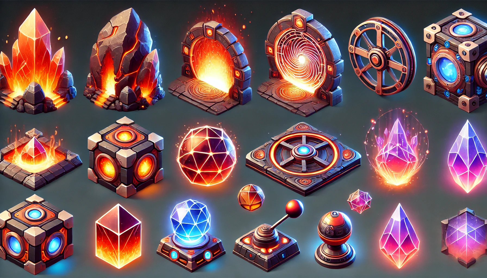
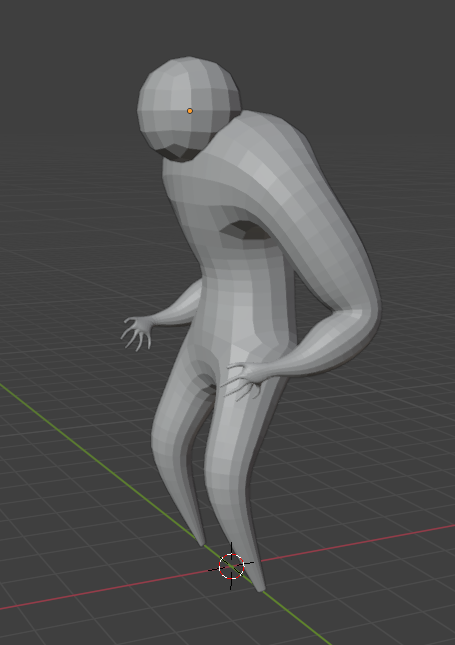

Notre progression
Septembre 2024
Début du projet
Formation de l'équipe, définition des objectifs et élaboration du concept initial de *Fragment of Ember*. Nous avons esquissé l'univers et les mécaniques principales.
Novembre 2024
Prototypes et premières modélisations
Création des premiers prototypes de gameplay et des modélisations 3D initiales pour tester les idées dans un environnement simple.
Janvier 2025
Évolution de l'histoire et des puzzles
Nous avons peaufiné le scénario principal et commencé à intégrer des puzzles interactifs avec des assets améliorés pour enrichir l'expérience utilisateur.

Mars 2025
Phase de finalisation
Le jeu entre en phase de finalisation : tests intensifs, corrections de bugs et ajustements pour préparer une démonstration jouable.